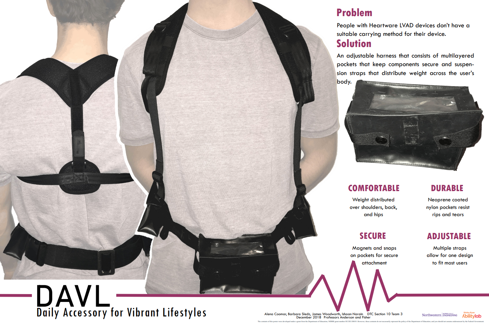

Barbara Sledz

The DAVL (Fall 2018)
The DAVL, or "Daily Accessory for Vibrant Lifestyles", is a product designed for patients with Heartware LVAD devices who are looking for a more suitable carrying method for their device.
This project was created as part of Northwestern's Design, Thinking, and Communication (DTC) class.
Blah 2
Blah 3